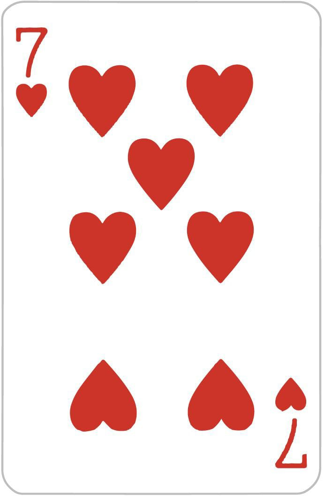

- Haz una imitación divertida de una celebridad.
- Come una cucharada de salsa picante
- Haz una interpretación de una escena de una película famosa.
- Canta una canción en público.
- Realiza una coreografía de baile improvisada.
- Haz una broma telefónica a un amigo.
- Llama a un contacto al azar en tu lista de contactos y dile algo inusual.
- Publica un estado en las redes sociales embarazoso.
- Lame una barra de hielo durante 30 segundos.
- Come un trozo de limón sin hacer muecas.
- Bebe un vaso de agua al revés (sin usar sorbete).
- Haz una declaración de amor falsa a alguien presente.
- Cuéntale a todos tu peor experiencia vergonzosa.
- Haz una llamada telefónica a un miembro de tu familia y diles que estás comprometido/a.
- Ve afuera y grita algo vergonzoso en la calle.
- Envía un mensaje de texto a tu ex y dile que todavía lo/la amas (solo si es seguro y no causará problemas).
- Comparte una historia embarazosa de tu pasado.
- Comparte una historia embarazosa de tu pasado.
- Llama a tu jefe y dile que no puedes ir a trabajar mañana por una razón absurda.
- Haz una broma a un extraño en la calle.
- Llama a un pizzería y pide una pizza que no existe.
- Come algo asqueroso (como una cucharada de mayonesa o mostaza).
- Haz una llamada de broma a un restaurante y pide una comida inusual.
- Llama a un amigo y dile que estás embarazado/a (solo si es apropiado y seguro).
- Hace una imitación de un amigo presente.
- Publica una foto tuya en una pose extraña en las redes sociales.
- Haz una llamada de broma a una tienda y pide un producto inexistente.
- Comparte un secreto vergonzoso.
- Come algo muy picante sin beber agua.
- Haz una imitación de un profesor o jefe.
- Llama a un programa de radio y comparte una historia ficticia.
- Manda un mensaje de voz a un contacto de tu elección diciendo que te mudas al extranjero.
- Come un poco de comida para mascotas (asegúrate de que sea segura).
- Llama a un número al azar y entabla una conversación divertida.
- Comparte una historia de citas vergonzosa.
- Haz una llamada de broma a una estación de servicio y pide gasolina para un coche eléctrico.
- Llama a tu vecino y dile que has visto un ovni en su jardín.
- Comparte una foto tuya con una máscara divertida en las redes sociales.
- Llama a un amigo y cuéntale una broma de mal gusto.
- Come un trozo de cebolla cruda.
- Hace una imitación de un político o figura pública.
- Llama a una pizzería y pide una pizza sin queso.
- Comparte una historia de vergüenza corporal.
- Bebe agua con los pies en un cubo de hielo.
- Llama a una tienda de electrónica y pregunta por un producto ficticio.
- Comparte una historia de una cita desastrosa.
- Llama a un amigo y dile que te has ganado la lotería.
- Haz una llamada de broma a una tienda de ropa y pide un traje de unicornio.
- Comparte una historia divertida de la escuela.
- Llama a un programa de televisión y comparte una teoría de conspiración ridícula.
- Come una cucharada de mostaza.
- Hace una imitación de un famoso personaje de dibujos animados.